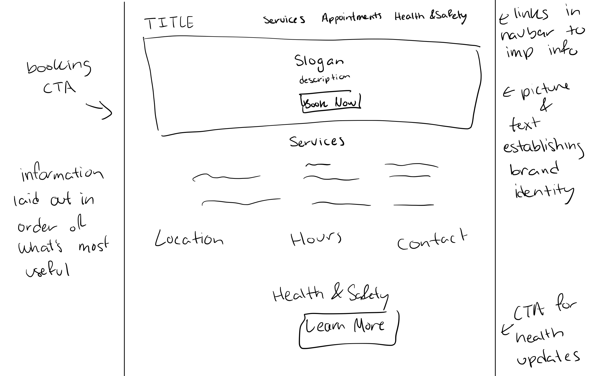
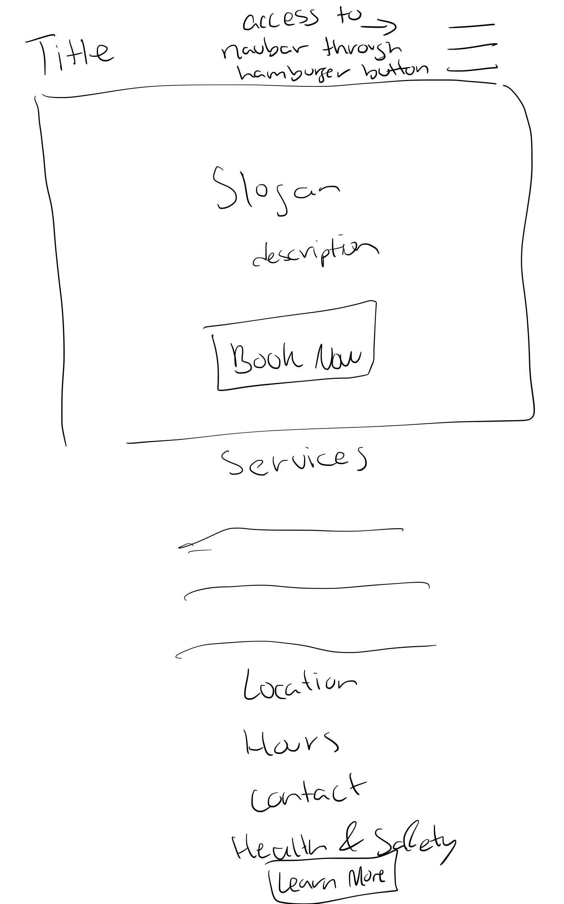
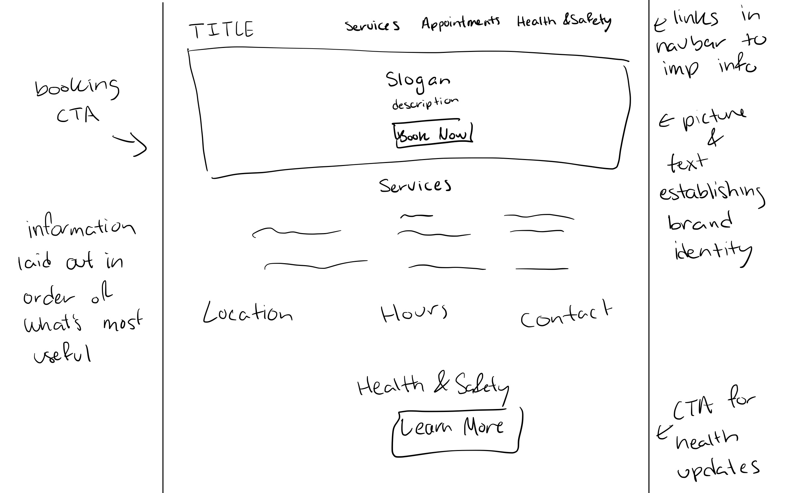
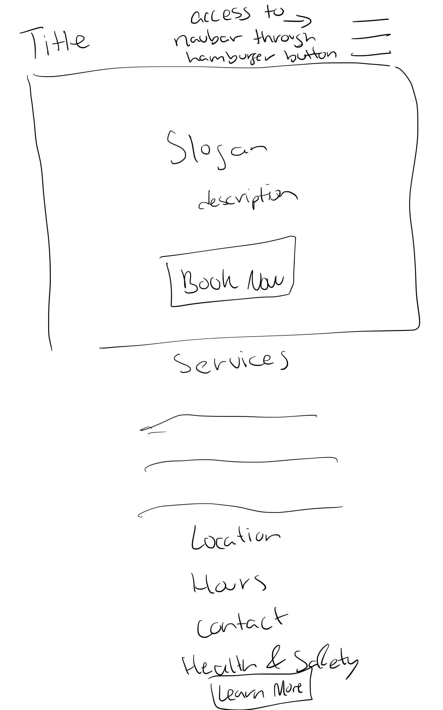
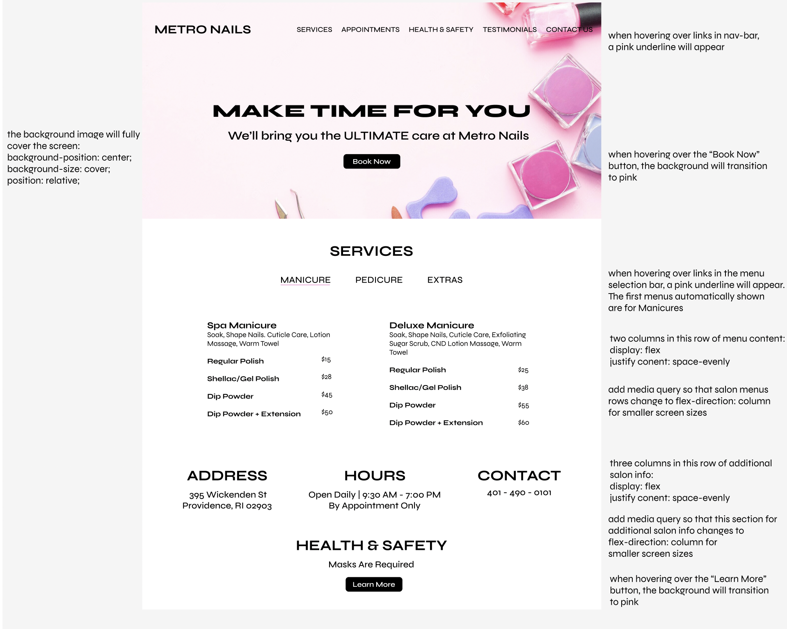
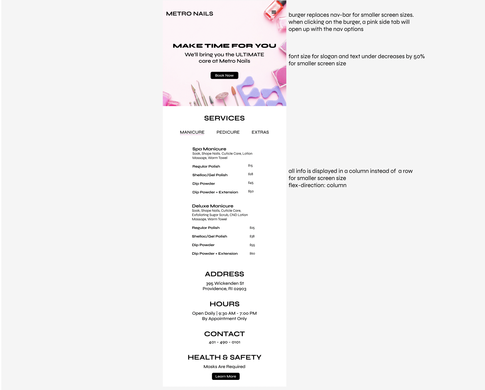
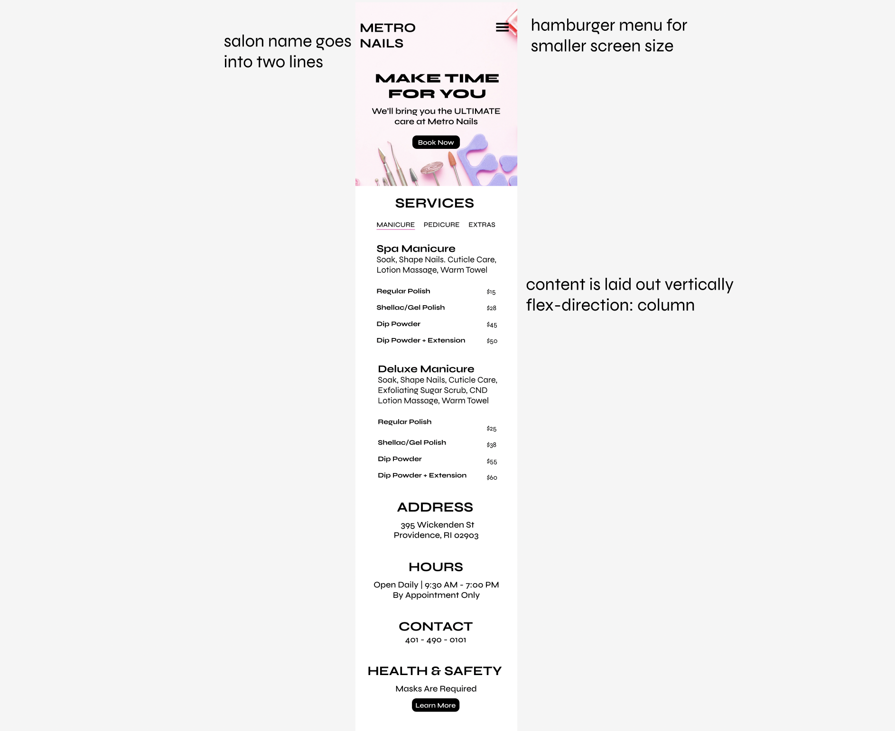

Low-fidelity Wireframing
I created wireframes to solve the problems I identified. The mobile and tablet are the same because I wanted a seamless experience between the two smaller screen sizes.
LAPTOP
TABLET
PHONE

For this project, I practiced the workflow of redesigning a website for a local Providence nail salon, Metro Nails,
because it appeared outdated and had significant usability issues.
I assessed the usability of this website in terms of usability (e.g., including efficiency), learnability, and memorability, and its conceptual model.
Here are the problems I identified:
In addition to analyzing the website on the aforementioned usability guidelines, I used WebAIM WAVE to detect accessibility problems:
I created wireframes to solve the problems I identified. The mobile and tablet are the same because I wanted a seamless experience between the two smaller screen sizes.
LAPTOP
TABLET
PHONE
I created a create a visual design style guide in Figma that displays the main colors, typography, and reusable components’ different states.
Using Figma, I created a total of 3 high-fidelity prototypes of the salon's home page, one for desktop, tablet, and mobile.
LAPTOP
TABLET
PHONE
Using the final high-fidelity prototypes, I created the page using HTML and CSS! I was able to acheive my accent color appearing when hovering over buttons and links. Also, my nav-bar collapses into a hamburger menu icon when the screen size gets smaller. The text also descreases in size for smaller screen sizes, and the contents dispalyed in rows shifts to being displayed in columns. I used this Youtube tutorial to help me with my code:
Easy Tutorial's video